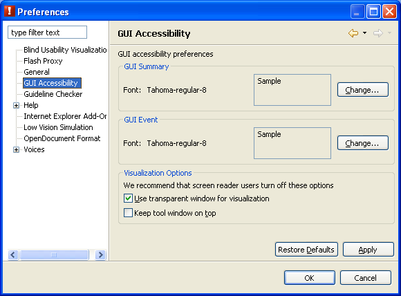
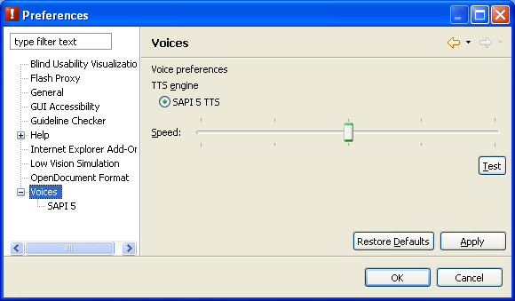
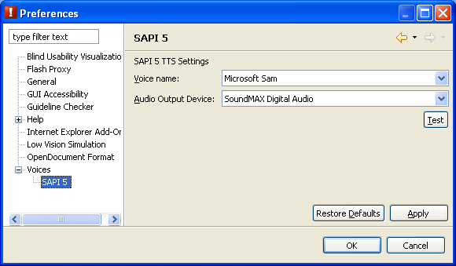
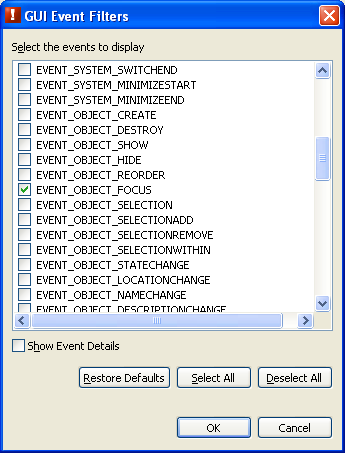

GUI Accessibility perspective configurations
GUI Accessibility preferences
Users can change the visual appearance of the GUI Accessibility perspective using these preferences.

Figure 1. GUI Accessibility preferences
- Options
- GUI Summary Font
- Select size and style of the font used in the GUI Summary view.
- GUI Event Font
- Select size and style of the font used in the GUI Event view.
- Use transparent window for visualization
- A full-screen transparent window will be used for highlighting and for drawing icons.
We recommend that screen reader users turn off this option.
- Keep tool window on top
- Show the tool on top of external applications. This keeps the tool visible even though other applications are being used.
We recommend that screen reader users turn off this option.
Voice preferences
Use this dialog to change the basic voice settings. The basic voice settings include the TTS engine and speed.
Use the TTS settings dialog located in the voice preferences to set the TTS-engine-dependent settings.

Figure 2. Voice preferences dialog
- Options
- TTS Engine
- Selects a Text-To-Speech engine.
- Speed
- Controls the voice speaking speed. When the slider is moved to the left, the reading is slower, and when moved to the right, the reading becomes faster.
The range of voice speaking speeds differs for each Text-To-Speech engine.
- Test
- Reads a test message using the current Speed setting.
Select the Apply button then the Test button to test a TTS engine.
SAPI5 TTS settings
ACTF supports any Microsoft® SAPI 5 compliant Text-to-Speech engine.
Windows® XP includes a default voice, "Microsoft Sam".
The voice can be changed by installing a different TTS engine.
The preferred audio output device can also be changed to optional audio output devices, such as external USB speakers.

Figure 3. SAPI5 TTS settings dialog
- Options
- Voice name
- Selects a named voice.
- Audio Output Device
- Selects an available audio output device.
- Test
- Reads a test message using the current settings.
GUI Event Filters
The GUI Event Filters dialog shows the available event types in the GUI Event view.
This dialog can be opened from the View menu (Ctrl+F10) of the GUI Event view.
Only the MSAA focus change event (EVENT_OBJECT_FOCUS) is selected by default.

Figure 4. GUI Event Filters dialog
- Options
- Event
- Specify which events are displayed in the GUI Event view. Only EVENT_OBJECT_FOCUS is selected by default.
- Show Event Details
- The accName, accRole, and accState information will be displayed if this option is selected.
Go to Index
Microsoft, Windows, Windows NT, and the Windows logo are trademarks of Microsoft Corporation in the United States, other countries, or both.